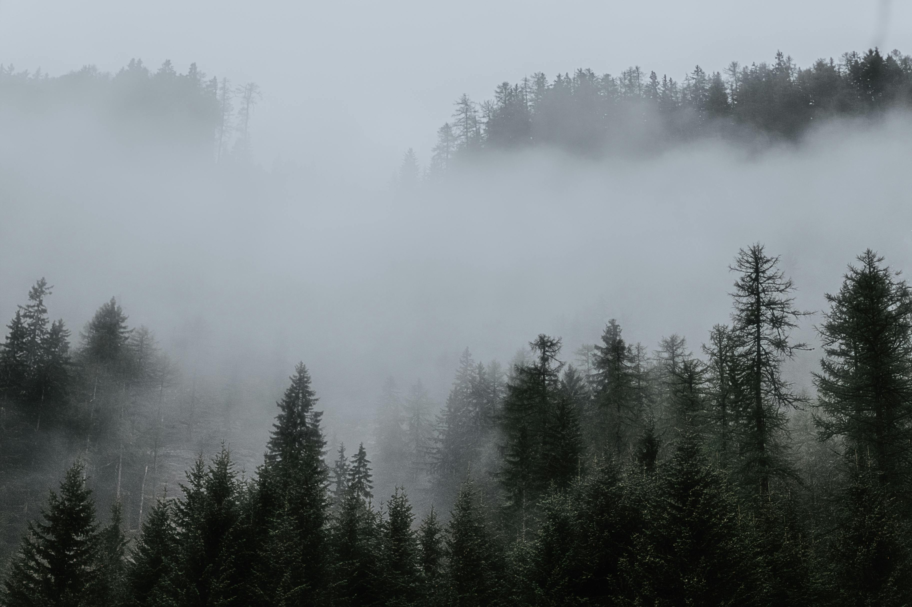
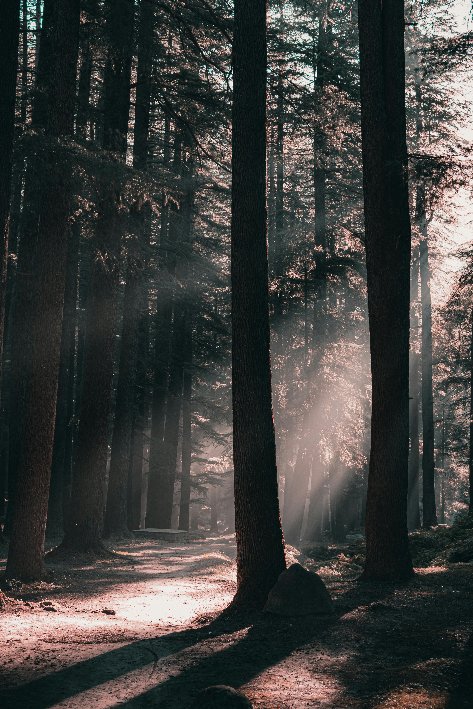
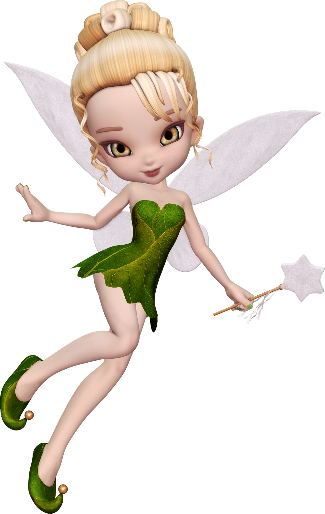

1. Bölüm – Sisli Ormanda Kayboluş
Bir zamanlar uzak diyarlarda, Ela adında meraklı bir kız yaşardı. Bir sabah, köyünün arkasındaki sisli ormana girdi ve geri dönmeyi unuttu. Kuş sesleri kesilmiş, yapraklar fısıldar gibi olmuştu.
2. Bölüm – Işığın Peşinde
Ela, karanlıkta bir ışığın yanıp söndüğünü fark etti. Işığa doğru yürüdükçe orman yolu açılıyor, etrafını minik parıltılar sarıyordu. O an anladı ki bu sıradan bir ışık değil, bir perinin çağrısıydı.
3. Bölüm – Orman Perisi
Ela, ormanın kalbindeki eski bir ağacın yanında bir periyle karşılaştı. Peri yıllardır ormanın kalbini koruyor ama artık ışığı sönüyordu. “Işığımı yeniden yakarsan, orman yeniden canlanacak,” dedi.
4. Bölüm – Dönüş ve Umut
Ela, perinin kalbini buldu, saf bir dilek tuttu ve orman yeniden ışığa boğuldu. Kuşlar ötmeye, çiçekler açmaya başladı. Köy halkı Ela’yı kahraman ilan etti, ama o sadece gülümsedi: “Gerçek ışık, içimizdeymiş.”